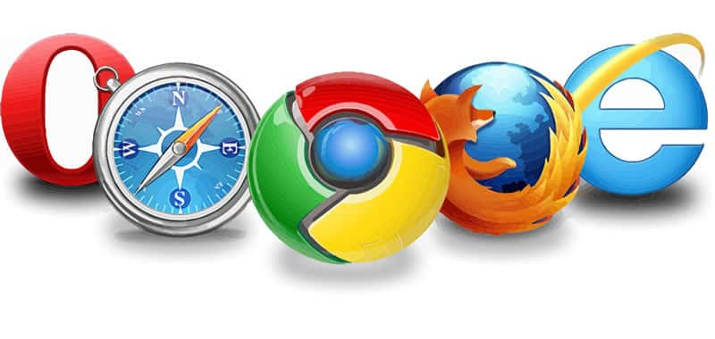
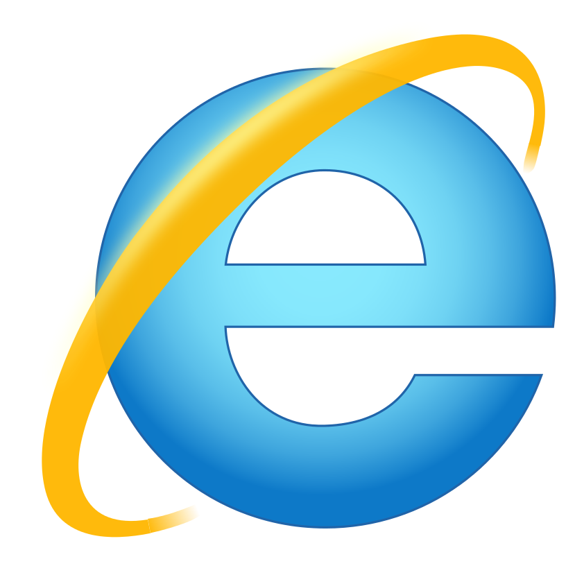
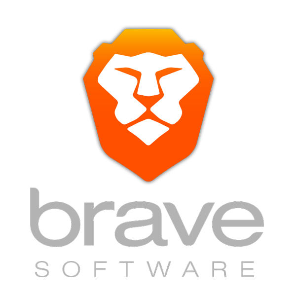
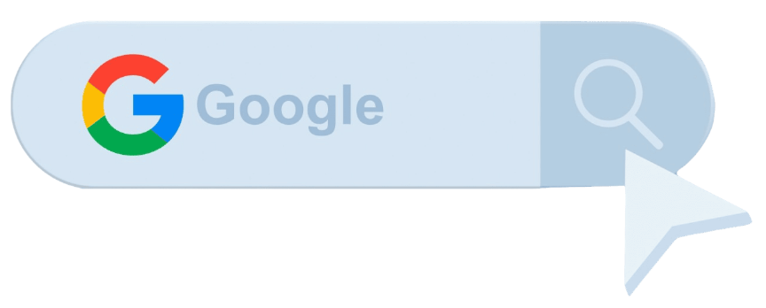
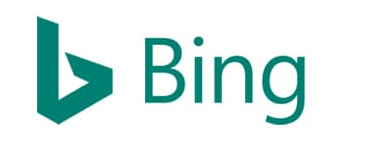
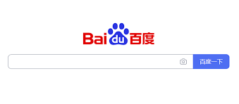

5.9 Navegadores y Buscadores

Hoy en día es posible navegar por Internet utilizando una gran variedad de navegadores y buscadores Web.
Para establecer conexiones con los servidores web y obtener la información y los servicios que éstos prestan, el usuario necesita tener instalado en su equipo un programa cliente capaz de comunicarse con ellos. Estos programas son los llamados navegadores web (browsers). Se tratan de programas informáticos que permiten visualizar la información que contiene una página web desde servidores web de todo el mundo a través de Internet. También nos permiten movernos entre diferentes páginas web de forma hipertextual. Sin navegador no se puede acceder a la red y navegar, siendo, por ello, fundamental si pretendemos utilizar internet.
Por otro lado, están los buscadores web o motores de búsqueda, aplicaciones informáticas que rastrean la Web catalogando, clasificando y organizando la información, para después ofrecérsela a los navegantes. Buscar información en Internet cada vez se hace más complicada, debido a la ingente cantidad de información que aparece continuamente. Encontrar de forma rápida y sencilla algo que andamos buscando, puede convertirse en una tarea ardua y, a veces, con resultados no deseados. La mejor forma de encontrar información en la Web es utilizar buscadores web.
Principales Navegadores Web
Internet Explorer
Internet Explorer es, para muchos, el navegador Web que los ha acompañado gran parte de su vida, ya que venía incluido con Windows 95, llegando a alcanzar una cuota de mercado de hasta el 95%. Poco a poco surgieron nuevas opciones como Opera, Chrome y Firefox, navegadores que fueron debilitando su uso. Posterior al lanzamiento de Windows 10, Microsoft presentó su nuevo navegador Microsoft Edge, por lo que Internet Explorer 11 dejó de tener soporte, perdiendo su compatibilidad con los servicios online de Microsoft Office 365.
Microsoft Edge
La mayoría de las computadoras que vienen con el sistema operativo Windows 10, trae instalado por defecto Microsoft Edge. Aunque se trata de un navegador relativamente nuevo, cuenta con muchas extensiones para personalizarlo al gusto de cada usuario, así como ajustes de seguridad fácilmente optimizables. Por otro lado, cada actualización trae consigo interesantes mejoras que lo convierten en un fuerte competidor de Chrome.
Chrome
 Chrome es el navegador Web más popular en la actualidad. Desde sus inicios en el 2008, ofrece una excelente estabilidad y un manejo muy intuitivo, ideal para todo tipo de usuarios. Destaca por sus grandes posibilidades de sincronización, su rapidez y su amplio portafolio de extensiones, que permiten disfrutar de una experiencia de navegación más personalizada y completa. A pesar de ser el más utilizado, su elevado consumo de recursos puede acarrear inconvenientes en los equipos menos potentes.
Chrome es el navegador Web más popular en la actualidad. Desde sus inicios en el 2008, ofrece una excelente estabilidad y un manejo muy intuitivo, ideal para todo tipo de usuarios. Destaca por sus grandes posibilidades de sincronización, su rapidez y su amplio portafolio de extensiones, que permiten disfrutar de una experiencia de navegación más personalizada y completa. A pesar de ser el más utilizado, su elevado consumo de recursos puede acarrear inconvenientes en los equipos menos potentes.
Firefox
Navegador open source creado en el 2004 para Mozilla. Su excelente rendimiento y sus numerosas extensiones le otorgan una gran versatilidad. Por otra parte, se actualiza con frecuencia, lo que ayuda a mejorar la experiencia de usuario.
Safari
 Navegador Web exclusivo para los dispositivos de Apple, lanzado a principios de 2003. Su buena velocidad de navegación, su uso sencillo e intuitivo, y la posibilidad de sincronización con todo el ecosistema de la marca hacen que sea muy utilizado. Sin embargo, únicamente es válido para dispositivos Apple y las funcionalidades y extensiones que proporciona se quedan muy atrás respecto a otros navegadores.
Navegador Web exclusivo para los dispositivos de Apple, lanzado a principios de 2003. Su buena velocidad de navegación, su uso sencillo e intuitivo, y la posibilidad de sincronización con todo el ecosistema de la marca hacen que sea muy utilizado. Sin embargo, únicamente es válido para dispositivos Apple y las funcionalidades y extensiones que proporciona se quedan muy atrás respecto a otros navegadores.
Opera
 Es un navegador Web de origen noruego que lleva en el mercado desde 1995. A pesar de su madurez, no es el más utilizado, aunque cuenta con interesantes cualidades que facilitan su continuidad en el tiempo. Entre ellas, destaca su interfaz de manejo sencillo y original diseño, así como la posibilidad de controlarlo por medio de la voz o su capacidad de ofrecer un gran rendimiento sin requerir grandes recursos del sistema, siendo el primer navegador en integrar un monedero cripto, que permite a los usuarios realizar y recibir pagos en línea con criptomonedas.
Es un navegador Web de origen noruego que lleva en el mercado desde 1995. A pesar de su madurez, no es el más utilizado, aunque cuenta con interesantes cualidades que facilitan su continuidad en el tiempo. Entre ellas, destaca su interfaz de manejo sencillo y original diseño, así como la posibilidad de controlarlo por medio de la voz o su capacidad de ofrecer un gran rendimiento sin requerir grandes recursos del sistema, siendo el primer navegador en integrar un monedero cripto, que permite a los usuarios realizar y recibir pagos en línea con criptomonedas.
Brave
Es uno de los navegadores Web más desconocidos del panorama actual. Sin embargo, su excelente velocidad y su sistema de seguridad Integra Tor, que protege al usuario durante la navegación, eliminando todo tipo de rastro. El navegador dispone de un sistema de recompensas para los usuarios basado en BAT (basic atention token), un token que funciona sobre blockchain de Ethereum y que permite que los usuarios reciban una suma mensual convertible en dólares por dar su consentimiento para ver publicidades.
Browzar
Es un interesante navegador Web que proporciona seguridad y protege al usuario, ya que no almacena información sensible sobre los lugares visitados, las descargas o las búsquedas realizadas. Si bien no es el navegador más veloz, ni con la interfaz más atractiva, una de sus ventajas es que no requiere instalación, ya que permite una ejecución externa.
Maxthon
Maxthon es un navegador basado en el motor Chromium y claramente orientado al contenido multimedia. Con una buena interfaz, permite integrar las descargas Torrent en su sistema e instalar extensiones de Chrome, que le aportan una gran versatilidad.
Vivaldi
 Vivaldi es quizá el más customizable y que ofrece una estupenda User Experience, a pesar de no ser ni el más veloz ni el más fluido de los navegadores. Permite personalizar la apariencia y disposición de los elementos en la pantalla, como por ejemplo la barra de direcciones y las pestañas, ya sea de manera totalmente manual o con ayuda de temas predefinidos. Por otro lado, su motor de búsqueda DuckDuckGo ofrece un plus de privacidad, que no almacena información del usuario.
Vivaldi es quizá el más customizable y que ofrece una estupenda User Experience, a pesar de no ser ni el más veloz ni el más fluido de los navegadores. Permite personalizar la apariencia y disposición de los elementos en la pantalla, como por ejemplo la barra de direcciones y las pestañas, ya sea de manera totalmente manual o con ayuda de temas predefinidos. Por otro lado, su motor de búsqueda DuckDuckGo ofrece un plus de privacidad, que no almacena información del usuario.
Principales Buscadores Web
Es el buscador más popular y ampliamente utilizado en todo el mundo. Ofrece una variedad de servicios y herramientas, incluidos mapas, correo electrónico, almacenamiento en la nube, etc. Google es conocido por su velocidad, relevancia y algoritmo de búsqueda avanzado.
Bing
Es el buscador desarrollado por Microsoft. Aunque no es tan popular como Google, Bing ofrece una variedad de servicios y características, incluyendo integración con Microsoft Office y Cortana, su asistente virtual.
Yahoo Search
Aunque Yahoo fue una de las principales puertas de entrada a internet en sus primeros días, su popularidad como buscador ha disminuido con el tiempo. Sin embargo, todavía tiene una base de usuarios leales y ofrece noticias, correo electrónico y otros servicios.
DuckDuckGo
Es un buscador que se centra en la privacidad de los usuarios. No rastrea las búsquedas ni guarda un perfil personal de los usuarios. Es ideal para aquellos preocupados por la privacidad en línea.
Baidu

Es el principal buscador en China y ofrece una variedad de servicios en línea para el mercado chino, similar a cómo Google lo hace para muchos otros países.
Yandex
Es el buscador líder en Rusia y ofrece servicios similares a Google, pero para el mercado ruso.
Ask.com

Originalmente conocido como Ask Jeeves, este buscador se centró en las búsquedas basadas en preguntas. Aunque ha disminuido en popularidad, todavía está en funcionamiento.
Ecosia
Es un buscador ecológico que utiliza los ingresos generados por las búsquedas para plantar árboles. Se centra en la sostenibilidad y en tener un impacto positivo en el medio ambiente.